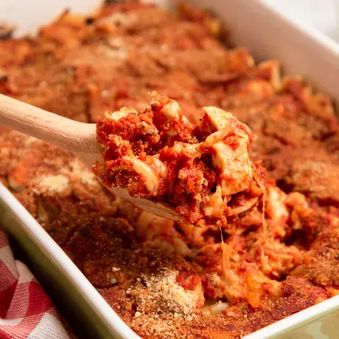

Home
Chicken-parmesan-casserole

Description:
Chicken Parmesan Casserole is a comforting, baked dish that combines the flavors of classic chicken Parmesan into a convenient casserole format. It typically features cooked pasta tossed in a zesty tomato sauce, layered with shredded or chopped chicken, and topped with a mixture of mozzarella and Parmesan cheese, often finished with a crispy panko breadcrumb topping for texture.
Ingredients
- 2 cups rotini pasta
- 12 ounces cooked chicken, cubed
- 1 cup shredded mozzarella cheese
- 2 cups marinara sauce
- ½ cup seasoned bread crumbs
Steps for making the chicken parmesan casserole
- Gather all ingredients. Preheat the oven to 350 degrees F (175 degrees C).
- Fill a large pot with lightly salted water and bring to a rolling boil over high heat. Cook rotini in boiling water until tender yet firm to the bite, about 8 minutes. Drain.
- Stir together cooked rotini, chicken, and mozzarella cheese in a large casserole dish.
- Pour marinara sauce over pasta mixture; sprinkle with bread crumbs. Cover the dish with aluminum foil.
- Bake in the preheated oven until cheese is melted, about 35 minutes.
- Serve and enjoy!